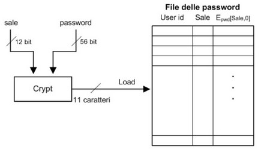
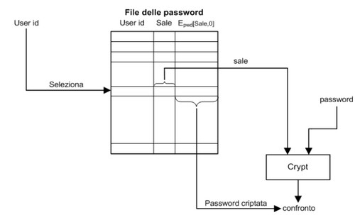
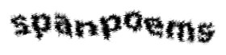

Torna alla pagina di Elementi di sicurezza e privatezza
:: Autenticazione ::
Introduzione
Un sistema informatico può (e dovrebbe) avere diversi servizi di sicurezza, introduciamoli sommariamente. Innanzitutto esistono tecniche di identificazione, ovvero processi in cui l'utente presenta delle credenziali al sistema per poter essere identificato, e meccanismi di autenticazione per verificarle. Il controllo dell'accesso deciderà se permettere o negare una richiesta di accesso in base a regole predefinite più o meno elaborate scritte dagli amministratori e applicate dal reference monitor. Esistono servizi di sicurezza anche una volta ottenuto l'accesso (a posteriori) come ad esempio la crittazione dei dati che garantisce il loro utilizzo solo ai legittimi riceventi, o il sistema audit che rileva eventuali violazioni e permette ai gestori del sistema di prendere gli opportuni provvedimenti.
Autenticazione
L' autenticazione stabilisce l'identità di una parte ad un'altra parte, dove per "parte" si intendono sia utenti che computer. E' un servizio di sicurezza primario, necessario in un sistema locale chiuso (l'autenticazione è difatti poco utile su un sistema distribuito).
L' autenticazione dell'origine dei dati garantisce l'origine di un'unità dati, ovvero verifica che i messaggi ricevuti provengano dalla sorgente indicata e che non siano stati modificati. Utilizza delle tecniche crittografiche ed è composta da due livelli: il livello inferiore è una stringa prodotta da un autenticatore che permette di verificare l'integrità dei dati, mentre il livello superiore è un protocollo di autenticazione che usa la funzione di livello inferiore.
L' autenticatore può utilizzare tre classi di funzioni, cioè la crittografia dei messaggi, il Message Authentication Code (MAC) e la funzione hash. Nel primo caso viene preso l'intero messaggio, crittato e inviato alla controparte, che se riesce a leggerlo correttamente ha la prova che non è stato modificato; così impostato è un meccanismo pesante e oneroso. Per quanto riguarda il codice MAC e la funzione di hash, entrambi producono un valore di lunghezza fissa derivato dal messaggio usando una funzione pubblica, con la differenza che il primo in più utilizza una chiave segreta. Le ultime due classi di funzioni possono essere combinate dall'autenticatore in questo modo:
- si applica una funzione di hash al messaggio iniziale, ottenendo una stringa crittata
- su questa stringa applico una chiave di crittografia pubblica, ottenendo un valore che associo al messaggio da inviare
- invio il messaggio
- il ricevente verifica che il valore associato al messaggio corrisponda a quello che avrebbe ottenuto lui manipolando il messaggio con gli stessi procedimenti (hash + stessa chiave pubblica) usati dal mittente
- se corrispondono, il messaggio è considerato non corrotto
Affrontiamo ora l'argomento dell' autenticazione utente a computer, studiando tre diverse tecniche.
Autenticazione basata sulla conoscenza
L' autenticazione basata sulla conoscenza è l'autenticazione di un utente in base a qualcosa che solo lui (si spera) conosce, ed è basata sulla coppia di informazioni:
- user ID, col quale l'utente si identifica
- password, stringa di caratteri con cui l'utente fornisce una prova della sua identità
Ci sono vari aspetti che rendono questa tecnica la più diffusa e duratura, principalmente la sua semplicità di implementazione e utilizzo, che la rendono a tutti gli effetti la strategia di autenticazione più economica da perseguire. Tutto ciò va però a scapito della sicurezza, dal momento che l'eccessiva facilità viene pagata in termini di vulnerabilità. Le password possono essere infatti:
- in alcuni casi facilmente indovinate (guessing). Molti usano la propria data di nascita, o il nome del partner, o direttamente la parola "password"
- osservate da persone che spiano gli utenti legittimi mentre le scrivono (snooping)
- acquisite da terze parti durante la comunicazione lungo la rete (sniffing)
- acquisite da terze parti che impersonano l'interfaccia di login (spoofing)
- chieste all'utente, approfittando della sua fiducia e leggerezza (fishing)
- cercate nelle liste contenute nel sistema
Approfondiamo quest'ultimo caso. La validazione di nome utente e password avviene confrontando quella inserita dall'utente con quella registrata in un file di sistema. Bisogna impedire in ogni modo che utenti malintenzionati possano accedere a tali liste, con meccanismi più robusti di un semplice controllo dell'accesso, dato che basterebbe un bug nel sistema operativo per compromettere la protezione. Per questo motivo il file delle password viene crittato, dopodiché per essere verificato esistono due strategie di verifica: il sistema decritta la password memorizzata e la confronta con quella inserita dall'utente, oppure critta la password inserita dall'utente e la confronta con quella crittata. Nel secondo caso, più sicuro, password diverse devono essere crittate in valori diversi, o sarebbero confuse dal sistema. In particolare, che succede se due utenti utilizzano la stessa password? Non c'è il rischio che possano essere confuse? I sistemi Unix-based risolvono questo problema assegnando a ogni utente un numero univoco di 12 bit chiamato salt. Nel file verrà memorizzato il valore crittato della concatenazione tra password e salt, quest'ultima memorizzata in chiaro perché tanto da sola non serve a nulla.

Scrittura nel file delle password

Validazione password
Un'ultima strada per scoprire la password di un utente è procedere per tentativi. Ci sono diverse tecniche, la più semplice è l' attacco esaustivo (brute force attack), ovvero un algoritmo che prova in modo sistematico tutte le possibili password. Pur garantendo che prima o poi troverà quella corretta, è decisamente oneroso e poco utile, dal momento che per provare tutte le possibili combinazioni di lettere maiuscole e minuscole, numeri e simboli ci potrebbe mettere degli anni. Una tecnica più raffinata è effettuare tentativi con password più probabili, che tengano conto di aspetti pratici. Ad esempio le scelte di un attaccante dovrebbero ricadere per prime su password simili al nome utente, poi sulle parole/nomi/pattern di uso comune (qui la top ten). Successivamente ha senso ricercare tra le parole di senso compiuto, effettuando il cosiddetto attacco dizionario. Se nemmeno questa via conduce a risultati (il che è piuttosto probabile), non resta che ricorrere all'attacco esaustivo, a meno di seguire le altre tecniche viste sopra (sniffing, spoofing, ...).
Comunque siano intercettate, chiunque riesca a conoscere le password di un utente può impersonarlo (masquerading), con tutti i pericoli che questo scenario comporta. Per questo è importante che il sistema sia sicuro, ma che anche gli utenti si facciano più furbi. Alcuni semplici accorgimenti sono:
- cambiare spesso la password
- non riferirla a colleghi o amici, ma mantenerle private (
trust no one)
- non scegliere password deboli, ormai sappiamo come operano gli attaccanti, bisogna rendergli il lavoro il più difficile possibile. Quindi si dovrebbero usare almeno 8 caratteri, utilizzare maiuscole minusole o altri simboli ed evitare le parole dei dizionari. Deve tuttavia essere facile da ricordare: non ha senso una password supersicura se poi ce la dimentichiamo
- non usare la stessa password su più computer
- non scriverla su pezzi di carta. Sembrerà assurdo, ma questa è la vulnerabilità più comune
Molti di questi accorgimenti sono implementati nei sistemi sottoforma di controlli automatici, che operano restrizioni sulla lunghezza dei caratteri, che rifiutano le parole di uso comune e che impongono un tempo di validità limitato, dopodiché bisogna cambiare la parola segreta.
Un ultimo tipo di password sono quelle grafiche, introdotte nella metà degli anni '90 e il cui processo di autenticazione sfrutta delle immagini. Il vantaggio principale è la resistenza agli attacchi di tipo dizionario, lo svantaggio è la sua vulnerabilità ad osservazioni dirette.
Un esempio importante di autenticazione basata sulla conoscenza riguarda Apache, ovvero il web server open source più diffuso, sviluppato per sistemi operativi come UNIX e Windows. Essendo modulare, le funzionalità possono essere estese o modificate a seconda delle proprie esigenze. Ad esempio il modulo mod_auth è quello di autenticazione utenti che usa un file di testo, mentre il mod_auth_digest utilizza la funzione di hash MD5.
L'autenticazione base in Apache non fa uso di tecniche crittografiche ed è basata sulla coppia "login - password", che richiede la creazione di un file in cui memorizzarla (htpasswd). Per proteggere queste informazioni è possibile creare in ogni cartella un file .htaccess che definisce gli utenti cui possono accedervi e i loro privilegi. Se invece si volesse andare oltre l'autenticazione base e crittare il file delle password (o parte di esso) per garantire maggiore sicurezza, si può utilizzare l'autenticazione digest. Questa utilizza un hash MD5 della concatenazione di nome utente, password, dominio più un numero pseudocasuale detto nonce, tutto ciò per rendere ancora più univoche le stringhe crittate. Il client invia i dati in forma crittata, ed il server confronta la stringa ricevuta con quella memorizzata nel file delle password: se coincidono all'utente viene consentito l'accesso. Questo tipo di autenticazione seppur più sicura non può essere utilizzata in generale, perché supportata solo da alcuni browser.
Autenticazione basata sul possesso
L' autenticazione basata sul possesso è basata sulla proprietà da parte degli utenti di token, ovvero strumenti di autenticazione che posseggono al loro interno una chiave crittografica usata per dimostrare l'identità del token a un computer. In generale questo sistema è più sicuro delle password, ma a patto che se ne mantenga il possesso. Questa è allo stesso tempo una vulnerabilità decisiva: se un token viene perso, rubato o falsificato, chiunque se ne sia impossessato può impersonare l'utente legittimo. A questo proposito questo tipo di autenticazione è spesso abbinata a quella basata sulla conoscenza. Ad esempio il bancomat chiede prima la tessera, poi il codice.
Passiamo più sul concreto e vediamo qualche tipo di token.
Abbiamo anzitutto le memory card, che hanno memoria ma non capacità di processo e che vengono usate con il personal identification number (PIN). Quest'ultimo non può essere controllato o codificato, né può essere crittato per la trasmissione che avvenendo in chiaro si rivela vulnerabile agli attacchi di sniffing e richiede fiducia nel server di autenticazione.
Le microprocessor card hanno invece sia memoria che processori, e si rivelano in generale più sicure dal momento che rendono possibile un controllo e una codifica sul PIN.
Esistono infine gli smart token (o smart card), anch'essi con capacità di processo e che prevedono sistemi di autenticazione più raffinati che assicurano maggiore sicurezza. Il processore integrato viene utilizzato in diverse fasi: lo scambio statico di password, la generazione dinamica di password ed il challenge response. Lo scambio statico di password avviene tra utente, token e server. Sono necessarie dunque due autenticazioni, una tra utente e token, ed un'altra tra quest'ultimo e il sistema. La generazione dinamica di password prevede l'utilizzo di una chiave (seme) cambiata periodicamente e condivisa con il server, sulla cui base vengono generate nuove parole d'ordine. Infine il challenge-response è una sorta di "sfida" ingaggiata tra il server e l'utente, che se la supera viene autenticato. E' basato sul protocollo challenge response handshake, così sequenziato: il server di autenticazione stabilsce una sfida (challenge), il token genera la risposta (response) diversa per ogni sfida (così da garantire la proprietà di freschezza), l'autenticazione ha successo se la risposta è corretta.
Vediamo ora un esempio di challenge response:
- la smart card ha un'unica chiave privata nota al server di autenticazione
- l'utente inserisce il PIN nella smart card, che lo verifica
- la smart card critta l'identificatore dell'utente, il PIN e informazioni addizionali (come data e ora) per generare una one-time password
- il messaggio crittato viene inviato al server
- l'autenticazione ha successo se il server può decodificare correttamente il messaggio crittato
Il challenge response è un sistema robusto rispetto a replay attack passivi, ma è decisamente vulnerabile rispetto ad attacchi attivi come il reflection attack o il man in the middle attack. Vediamo un esempio.
L' identify friend of foe è nato come sistema di identificazione elettronica di aerei amici/nemici. Come in un qualsiasi sistema di challenge response viene fatta una domanda (lanciata una sfida) all'altro aereo: se risponde correttamente è un amico, se no lo si attacca. Il reflection attack è piuttosto primitivo, ma almeno agli inizi funzionava. In pratica se l'aereo amico (A) manda un challenge al nemico (B), quest'ultimo potrebbe rispondergli con la stessa domanda. A ricevendo la domanda rispedisce subito la risposta corretta, che può essere usata da B per sembrare un amico. Sono state perciò introdotte altre modalità di comunicazione delle sfide (almeno quattro) di complessità e sicurezza crescente, che ad esempio includono nella risposta anche l'identificatore del soggetto rispondente.
Autenticazione basata su caratteristiche
L' autenticazione basata su caratteristiche (o biometrica) è legata agli attributi biometrici dell'utente, che possono essere di due tipi:
- caratteristiche fisiche, ad esempio impronte digitali o della retina
- caratteristiche comportamentali, ad esempio firma o timbro di voce
Questo tipo di tecnica richiede una fase iniziale chiamata enrollment phase, che consiste nella misurazione ripetuta della proprietà di interesse e nella definizione di un template. Terminata questa fase, il processo di autenticazione consiste nella misurazione della caratteristica e nel confronto con il template: se questi corrispondono entro un certo intervallo di tolleranza, all'utente viene dato l'accesso. Una soglia di tolleranza si rende necessaria perché non ci si può aspettare un uguaglianza perfetta, tuttavia la sua scelta deve essere estremamente studiata, in modo da massimizzare i successi e minimizzare gli insuccessi.
Il fatto che tra template e misurazione rilevata ci possano essere piccole differenze può trarre in inganno: l'autenticazione biometrica è la forme di autenticazione più forte, perché elimina ogni vulnerabilità dovute a impersonificazioni. I motivi per i quali è ancora poco utilizzata sono il suo costo (richiede hardware specifico piuttosto oneroso) e le perplessità che suscita per il mantenimento della privacy degli utenti.
Ricapitolando, abbiamo visto tre tecniche di autenticazione: qual è la migliore? Sarebbe troppo semplice dire l'ultima perché la più sicura, bisogna prima fare un bilancio tra costi e benefici. Beh, tirando le somme pare che il metodo delle password sia quello più utilizzato, perché economico, più semplice e tutto sommato piuttosto sicuro con alcuni accorgimenti e un po' di attenzione degli utenti. Da un punto di vista prettamente tecnico, il sistema migliore in termini di sicurezza sarebbe un'autenticazione biometrica tra utente e token, quindi la mutua autenticazione basata su crittografia fra token e sistema.
Single sign on
Finora ci siamo concentrati sui sistemi locali, ora alzeremo la visuale e tratteremo dei sistemi distribuiti.
Grazie ad internet è possibile accedere a servizi di ogni tipo, su macchine remote dislocate qua e là su sistemi distribuiti. L'utente sarà dunque costretto ad autenticarsi nell'ambito di ciascun dominio con cui interagisce, dovrà cioè fornire user ID e password per ogni servizio di cui vorrà usufruire. Ciò oltre a comportare la duplicazione delle informazioni personali, costringere l'utente a ricordarsi più password, o peggio ancora ad utilizzare sempre la stessa.
I sistemi Single Sign On (SSO) sono stati concepiti per risolvere questa situazione, consentendo all'utente di autenticarsi una volta per tutta a più servizi distribuiti utilizzando un'unica credenziale, dove per credenziale intendiamo la solita login e password. La robustezza del sistema rimane legata al processo di autenticazione utilizzato, che deve essere particolarmente forte data la sensibilità delle informazioni da condividere su più sistemi distribuiti.
In un SSO esiste un dominio primario, presso cui l'utente si registra e si autentica. Ad esso sono collegati una serie di domini secondari, con i quali esistono delle relazioni di trust per garantire la sicurezza, ai quali il dominio principale si preoccuperà di comunicare le informazioni rilasciate dall'utente che ha usato il servizio di sign on.
Un sistema Single Sign On può avere due tipologie: centralizzata e federativa (in realtà esiste anche quella cooperativa, che non sarà trattata in questa sede).
In un SSO centralizzato esiste un'autorità centrale e una repository centralizzata che gestiscono le informazioni di autenticazione di TUTTI gli utenti, e che comunica con i domini secondari attraverso protocolli come il SAML o il SOAP. Il vantaggio di questa tipologia è la facilità di gestione e di controllo dell'accesso, a costo però di avere un single point of failure: un attacco diretto al dominio primario danneggerebbe l'intero sistema.
Il protocollo SAML (Security Assertion Markup Language) è un insieme di specifiche per lo scambio di informazioni, chiamate asserzioni. Sono basate sul linguaggio XML e sono progettate per funzionare sui meccanismi di trasporto più comuni, come HTTP, SMTP, FTP e altri ancora. Le asserzioni possono essere di tre tipi:
- di autenticazione, che identificano un utente
- di attributi, che contengono le informazioni specifiche dell'utente
- di permessi, che definiscono quali operazioni può compiere un utente e quali no
Indipendentemente dal tipo, ogni assezione deve contenere il suo identificatore univoco, la data e l'ora di creazione, il periodo di validità e cosa essa dichiara, oltre ad informazioni addizionali come ad esempio la dipendenza da altre asserzioni.
Infine è importante sottolineare che SAML di per sé non autentica né autorizza nessuno, si limita esclusivamente a trasportare informazioni tra i domini.
Negli SSO federati l'autenticazione è invece realizzata da più server SSO indipendenti, ognuno dei quali possiede un'identità parziale dell'utente. La combinazione delle identità indipendenti registrate nei vari domini forma la network identity; in altre parole, essa è l'insieme di tutte le informazioni dell'utente (username, indirizzo, telefono, ...) che egli ha rilasciato ai diversi service provider per autenticarsi. La ricostruzione della network identity è possibile solo se esiste una federazione tra i vari service provider, quindi solo in seguito ad accordi stipulati che l'utente deve rispettare e accettare. Una di queste federazioni è la Liberty Alliance, che ha creato una serie di tracciati (circoli) che mettono in comunicazione i service provider facendo agire alcuni di essi come server SSO di autenticazione (identity provider). Le identità locali vengono combinate in modo che l'utente possa utilizzare i servizi di un circolo dopo l'autenticazione presso uno degli identity provider.
Caso di studio: Microsoft .NET Passport
Passport è un SSO centralizzato ideato da Microsoft e basato sull'utilizzo dei cookie, in cui abbiamo tre attori in gioco: l'utente, i siti partecipanti e il Server Passport Sign-On. Vediamo come funziona.
Come prima cosa l'utente deve registrarsi presso il server centrale Passport, o non potrà autenticarsi ai servizi offerti dai siti partecipanti. Per aumentare il livello di sicurezza, data la sensibilità della procedura sono state introdotte due contromisure per evitare le registrazioni automatiche, che potrebbero essere utilizzate da utenti maliziosi per mandare spam o violare il sistema. Una prima difesa è il CAPTCHA, un test visivo che permette di distinguere le macchine dagli umani. Generalmente si tratta di riconoscere i caratteri presenti in un'immagine in cui vengono riportati pesantemente distorti. Più facile a vedersi che a dirsi:

La seconda contromisura è invece la classica email di conferma inviata sulla casella di posta indicata in fase di registrazione.
Una volta registrati, per ogni utente viene generato e assegnato un identificatore univoco chiamato Passport Unique Identifier (PUID). Passiamo ora alla fase di autenticazione. Quando un utente cerca di autenticarsi a un sito partecipante, viene automaticamente reinderizzato alla pagina di login di Passport. Se l'operazione va a buon fine, il server crea tre cookie (che critta con una chiave di cifratura inviatagli dal sito di partenza) che contengono: il PUID dell'utente e il timestamp (ticket cookie), le informazioni del profilo (profile cookie) e infine la lista dei siti a cui si è collegato (visited sites cookie). A questo punto l'utente viene rispedito al sito partecipante cui si era inizialmente collegato, il quale decritta i cookie e gli consente l'accesso ai servizi richiesti. Notare che il server Passport non comunica username e password dell'utente, ma si limita a segnalare che l'autenticazione è andata a buon fine.
Se i cookie sono protetti dalla cifratura, altrettanto protetto non è il canale di comunicazione su cui viaggiano. Se venissero intercettati, un utente malizioso potrebbe tenerli così come sono per impersonare l'utente legittimo al posto suo. Una soluzione è adottare un protocollo Secure Socket Layer (SSL) durante tutto il processo di autenticazione, che critta il traffico impedendo di fatto a un intruso di capire quando e se è stato spedito un cookie tra browser dell'utente e il server Passport. Si può alzare ulteriormente il grado di sicurezza portando a due i livelli di autenticazione, uno per login e password, l'altro con un PIN (che dopo un certo numero di tentativi errati solleva altre procedure di protezione). Anche questo secondo livello è crittato con protocollo SSL.
La tipologia di questo sistema è un SSO centralizzato, ciò rende il server Passport un single point of failure. Un utente malintenzionato potrebbe attaccarlo per provocare un DoS (denial of service, l'interruzione del servizio), o peggio ancora per accedere alle informazioni riservate degli utenti registrati. Di seguito presenteremo tre tipologie di attacco: l' attacco passivo, l' attacco attivo, e l'attacco DNS, che possono essere generalizzate anche al di fuori del SSO Passport.
In un attacco passivo abbiamo un utente malintenzionato che crea un finto sito Passport, magari con un indirizzo leggermente diverso, in tutto identico all'originale. L'utente non avveduto tenterà di autenticarsi a questo sito fornendo il proprio username e password all'attaccante, che saprà sicuramente cosa farsene.
In un attacco attivo l'attaccante è riuscito invece ad accedere alla rete tra gli utenti e Passport, ed è inoltre in grado di modificare il contenuto dei pacchetti che si mandano. In questo modo potrà reindirizzare l'utente presso il proprio sito di autenticazione fasullo, e dunque sottrargli le informazioni del suo account.
Infine in un attacco DNS l'utente malizioso riesce ad accedere alle tabelle DNS dell'attaccato, riscrivendo alcuni indirizzi IP di siti di fiducia (come il server Passport) in modo che indirizzino al proprio sito fasullo. L'attacco si completa come nei casi precedenti.
Torna alla pagina di Elementi di sicurezza e privatezza